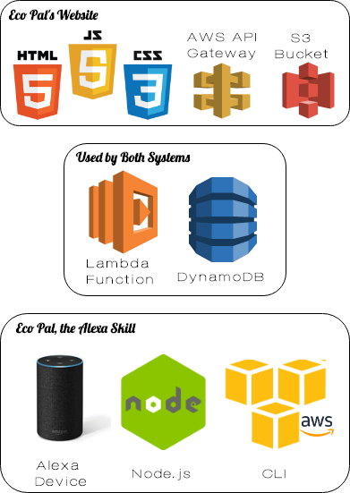

Eco's Developer Guide
Installation
Want to work on and imporve Eco Pal? Well it can be done in a few easy steps! Eco Pal itself is just an Amazon Alexa skill which is an Amazon Voice Service. Eco Pal has minimal dependencies that runs on Node.js JavaScript runtime. Eco Pal uses a DynamoDB database on AWS Lambda function through Amazon's Web Services (AWS). To find out more about AWS Lambda click the link. To get started on improving Eco Pal, follow the steps below.
Installing the Technology Stack
Before you can start working on our project, make sure you have the following:
- An Amazon Developer account which allows access to a suite of tools and services to enable a developer to build, test, and sell applications/games in the Amazon Appstore.
- An Amazon Web Service (AWS) account. This account does not have to be the same as your Amazon account, if you already have one. This is where you'll have acess to the Lambda funciton, DynamoDB, S3, and a series of other tools.
- A GitHub account.
- The Amazon Alexa app which you can download via your mobile device's app store for the purpose of connecting your Amazon Developer account to your Alexa compatible device.
Please note that while you can test your interaction through the Amazon developer console, it does not test for every interaction so having an Alexa comptabile device is recommended.
Getting the Code
In Eco Pal's github repository, you can find all the code for the Alexa skill and the website. At this point, you can get the code by typing the following commands in the terminal:
git clone https://github.com/skl1m/ecopal.git- Download the code.
cd ecopal- Change directories, going into the folder where all the code is.
npm install- Install the dependencies
Running the Skill
Next, make sure you're logged into your Amazon Developer account (remember this could be the same as your regular Amazon account) and your Amazon Web Services account.
Start by creating a new skill with a different name than Eco Pal. Choose to make a custom skill.
Once you are taken to the console page which looks like this: then follow the skill builder checklist and complete each steps to be able to test the skill until you've reached step four (the endpoint).
Before completing the endpoint (step four), head over to your AWS account and create a lambda function.
Follow these steps to create a lambda function for an Alexa skill.
In the lambda function for your skill, after connecting your skill to the function and adding your ARN of your lambda function into your endpoint in the Amazon Developer console, you can begin to program in the lamda function or download AWS CLI and test in the developer console or through your Alexa device.
To set up the Alexa device, like the Echo Dot, follow the link.
Now you can make changes to our project or create your own skill using our project as a reference!
To figure out how to get started with DynamoDB please follow the steps in this link.
Running the Website
Eco Pal's wesbite is a serveless website. Amazon S3 hosts static web resources including HTML, CSS, JavaScript, and image files which are loaded in the user's browser. Amazon DynamoDB provides a persistence layer where data can be stored by the API's Lambda function. The website uses a RESTful API where JavaScript executed in the browser sends and receives data from a public backend API built using Lambda and API Gateway. If you are interested in learning how to make a serverless website through Amazon Web Services, you can follow these few steps:
Create the CSS, HTML, and JavaScript files and upload them into Amazon's Simple Storage Service (Amazon S3).
Create a lambda function and connect that function to API Gateway and DynamoDB. Make sure that the API Gateway is able to read data from the database. If successful, download the generated files from API gateway.
In the S3 bucket, switch to a static web hosting option and host the website as public. Then set the homepage file as the landing page. The next step within the S3 bucket is we allow cross region permission and API Gateway permission.
Link the S3 bucket to a domain.
What to expect?
Currently, our system is almost ready for deployment. There's just a few functionalities we are working on fixing. The Alexa skill code is implemented in Node.js using ES6 Javascript syntax. We currently use DynamoDB to store all the data for our skill as we are incorporating the UCSF recycling database information. We currently have a paired website for our users to get information regarding Eco Pal. To find more information about that look below.
Want to contribute?
Did you find a bug or would like to suggest new features? We're open to any feedback and would love to improve our system. Please contact us at eco.thealexaskill@gmail.com, thank you!
Also, checkout Eco Pal's Alexa skill github or Eco Pal's website github repository and feel free to contribute with pull requests.